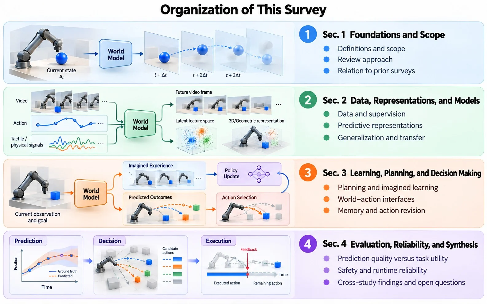
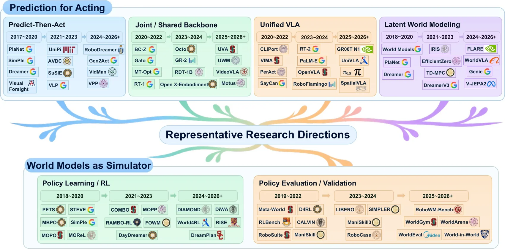
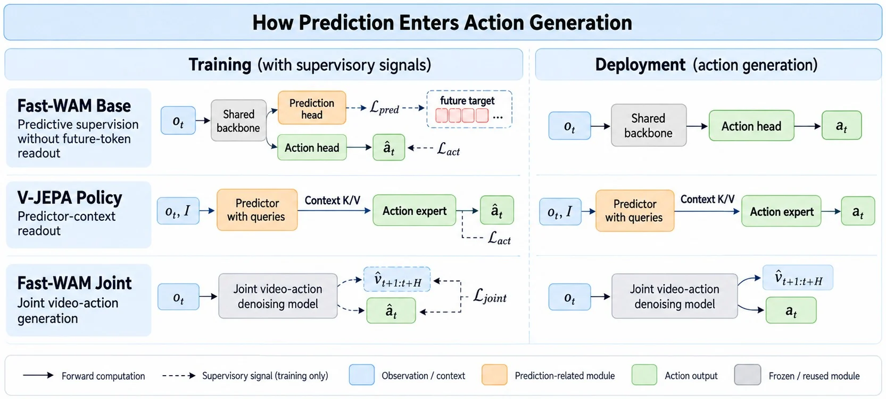
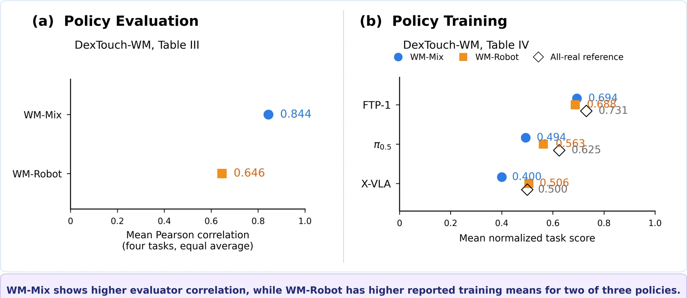
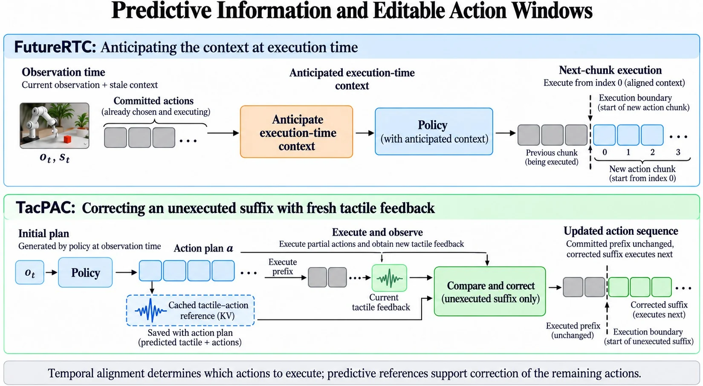
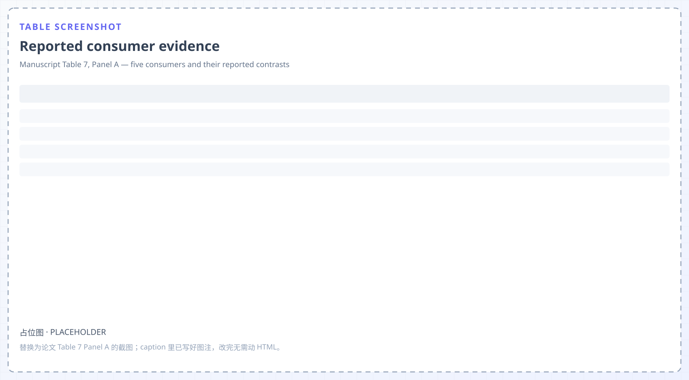

Foundations and scope
What counts as a world model, and what evidence can support a claim about one particular use of it? Includes the review approach and the relation to prior surveys.
Survey · Physical AI · World Models
A world model can be accurate and still useless to the decision that consumes it. This survey organises the field by what each downstream use measures, not by architecture.
Manuscript submitted for review · 2026
Overview
The survey moves from what a world model is, to what it is trained on, to where its prediction enters a decision, to whether the reported result tests that use.

What counts as a world model, and what evidence can support a claim about one particular use of it? Includes the review approach and the relation to prior surveys.
Which supervision licenses which query? Passive video, synchronised commands, physical-state labels and recovery annotations each license a different one.
Where does a prediction enter the computation — planning, imagined experience, action decoding, or correction after a new observation?
Does the reported endpoint test the claimed use? Six evidence levels, safety and runtime checks, and the open questions that remain unattributed.
Three cross-study findings
Each finding is a case where the reported endpoint does not test the claimed use — not a case where the experiment was inconclusive.
GNS improves recursive rollouts under perturbed training while worsening clean one-step accuracy. ContactWorld's lowest prediction-error growth does not yield its best planning success: 32.3% point clouds against 39.5% full tactile on one 12-task protocol.
DexTouch-WM's evaluator correlates better for WM-Mix (r = .844) than for WM-Robot (.646), yet WM-Robot trains two of three policies better. The better evaluator is not the better data generator.
Under a fixed oracle context, FutureRTC scores 96.6% from the first generated action and 0.9% from index 20. TacPAC reaches 47 → 64% while its Bottle task stays at 40 / 40%.
Research landscape
The figure sorts representative systems by publication period and by prediction consumer. Read the columns first, then the years: a direction becomes viable when its column appears, not when the first paper in it is published.

Four columns generate actions — predict-then-act, shared backbone, unified VLA, latent world modeling. Two serve as learned environments: policy learning and policy evaluation.
Predict-then-act runs from 2017; unified VLA only from 2020, once vision-language backbones became available. A later column does not supersede an earlier one.
PlaNet and Dreamer appear both under predict-then-act and under latent world modeling. One system can occupy several columns, which is why a single taxonomy of models fails.
World–action interfaces
Three configurations from one study family, drawn on the same axes. The difference is not whether prediction is trained, but which quantity the action head reads when it acts.

The prediction head exists only during training; at deployment the action head reads the shared backbone. Removing video co-training costs 8.0 RoboTwin and 4.1 LIBERO points with architecture and inference unchanged.
The action expert reads predictor context positions and keys/values updated with learnable future queries — not the final predicted future latent.
Video and action are denoised together, and generated-frame key/value entries are replaced with observations after each chunk. Executing only the decoded action does not remove the future tokens from sampling.
Evaluation
Both panels use the same study and the same four tasks. Panel (a) asks whether the model predicts policy outcomes; panel (b) asks whether data it generates trains a better policy.

WM-Mix reaches r = .844 and WM-Robot .646 as a mean over four tasks. If evaluator agreement were the criterion, WM-Mix would be selected.
WM-Robot beats WM-Mix on π0.5 (0.563 vs 0.494) and X-VLA (0.506 vs 0.400), and loses on FTP-1 (0.688 vs 0.694). Two of three learners favour the low-agreement generator.
Execution-time correction
Temporal alignment decides which actions to execute; a predictive reference decides whether the remaining ones can be corrected. These are separate mechanisms and are often reported as one latency effect.

The next chunk is generated against an anticipated execution-time context instead of the stale observation time, so it can start from index 0. Under a fixed oracle context, the choice of index moves success from 96.6% to 0.9%.
The committed prefix stays; the unexecuted suffix is revised using fresh tactile feedback and a cached tactile-action reference saved with the plan. Success rises 47 → 64% while the Bottle task stays at 40 / 40%.
Synthesis
Each consumer, the original contrast that supports it, and the boundary that limits what the contrast settles. Reproduced here as a placeholder for a screenshot of the original table.

Open problems
Each item is a testable gap, stated the way the survey argues future work should state them.
Rejected candidates' physical outcomes are never observed, so selection regret stays unmeasurable until a protocol branches failure states while fixing candidate set, continuation policy, horizon and repeats.
Evaluator agreement cannot select a data generator independently of the learner. One correlation statistic cannot substitute for the downstream training recipe.
Correction access, action-index alignment and update timing are distinct operations. No reported study collapses them into a single runtime-efficiency claim.
Formal certificates assume a valid state and uncertainty model plus a stabilising policy, a feasible backup, or an admissible safe input. A visual forecast supplies none of them.
Automatic repair pipelines score below policy-only baselines on physical tasks (0–25% against 30% policy-only, 65% human). Reliability needs the consequence of an intervention, not only its timing.
The Core Evidence Set is mechanism-focused, not representative. The prevalence of benefits and failures cannot be inferred from it, and inclusion rationales were recorded retrospectively.
Citation
Author information is withheld for review; update this block once the paper is public.
@article{worldmodelsphysicalai2026,
title = {World Models for Physical AI: Learning to Predict,
Plan, and Act in the Real World},
author = {Anonymous Author(s)},
journal = {Manuscript submitted for review},
year = {2026},
note = {Coverage Corpus: 758 publication families;
Core Evidence Set: 17 study families}
}Scope note. Figures 1, 2, 3, 5 and 6 are the manuscript's own diagrams; Figure 4 is not reproduced here. Numbers on this page are within-study anchors, not cross-survey scores, and should be read against the protocol boundaries in the paper.